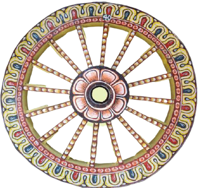
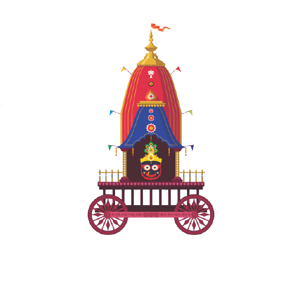

.png)
Click


RATHA YATRA, the Festival of Chariot: Chariots of Shri Jagannath is celebrated every year at Puri, the temple town in Odisha, on the second (dwitiya) day of shukla pakhya (waxing cycle of moon) of Āshādha Māsa (3rd month of Odia calendar). The presiding deities of the Jagannath Temple, Puri's main temple, Lord Jagannath, Lord Balabhadra and Goddess Subhadr, with the celestial wheel- Sudarshana Chakra (ସୁଦର୍ଶନ ଚକ୍ର) are removed from the temple in a ceremonial procession to their chariots. The huge, colourfully decorated chariots are drawn by multitude of devotees on the bada danda, the grand avenue to the Gundicha Temple (Gundicha– King Indradyumna's Queen), two miles away to the North. On the way the chariot of Lord Jagannatha, Nandighosa (ନନ୍ଦିଘୋଷ) waits near the crematorium of Bhakta Salabega (ଭକ୍ତ ସାଲବେଗ), a Muslim devout to pay him tribute.
On their way back from the Gundicha Temple, the three deities stop for a while near the Mausi Maa Temple (Aunt's abode) and have an offering of the Poda Pitha, which is a special type of pancake supposed to be the Lord's favourite. After a stay for seven days, the deities return to their abode.
The three chariots of Jagannath, Balabhadra and Subhdra are newly constructed every year with wood of specified trees like phassi, dhausa, etc. They are customarily brought from the ex-princely state of Dasapalla by a specialist team of carpenters who have hereditary rights and privileges for the same. The logs are traditionally set afloat as rafts in the river Mahanadi. These are collected near Puri and then transported by road.
The three chariots are decorated as per the unique scheme prescribed and followed for centuries stand on the Bada Danda, the GrandAvenue. The chariots are lined across the wide avenue in front of the temple close to its eastern entrance, which is also known as theSinhadwara or the Lion's Gate.
Around each of the chariots are nine Parsva devatas, painted wooden images representing different deities on the chariots' sides. Eachchariot has a charioteer (Sarathi) and four horses.
Bahuda Yatra According to folk stories Lord Jagannath and his siblings, Goddess Shubhadra and Lord Balabhadra, returns from their aunt’s place at Gundicha Temple to Jagannath Temple.This journey is known as Bahuda Yatra.Nine days after the Rath Yatra, the yatra or the return journey takes place.
Suna Besha, also known as Rajadhiraja besha Raja Besha and Rajarajeshwara Besha, is an event when the Hindu deities Jagannath, Balabhadra and Subhadra (the presiding deities of Jagannath Temple, Puri, India) are adorned with gold jewelry. Suna Bhesha is observed 5 times during a year. It is commonly observed on Magha Purnima (January), Bahuda Ekadashi (July), Dashahara (October), Kartik Purnima (November), and Pousa Purnima (December). The name Suna Bhesha is derived from two words, 'Suna' meaning "gold" and'Bhesha' meaning "costume".
While one such Suna Bhesha event is observed on Bahuda Ekadashi during the Rath Yatra on the chariots placed at the lion's gat(also called Singhadwara.); the other four Beshas' are observed inside the temple on the Ratna Singhasana (gem studded altar)On this occasion gold plates are decorated over the hands and feet of Jagannath and Balabhadra; Jagannath is also adorned with Chakra (disc) made of gold on the right hand while a silver conch adorns the left hand. However, Balabhadra is decorated with plough made of gold on the left hand while a golden mace adorns his right hand.
The word Bahuda means ‘return’ in Odia.
After spending nine days in his aunt’s home, Lord Jagannath, Lord Balabhadra and Devi Subhadra will return to their abode in thPuri temple today in their grand Rathas. Shree Mandir administration released the Yatra schedule according to which Bahuda Pahandcommenced at 8 AM and will continue till 10 AM. After that, Chera Panhara will take place between 10:30 AM and 11:30 AM, followeby the Bahuda Yatra.
There are many rituals involved in Bahuda Yatra. Mangal Aarti takes place early morning around 4:00 AM as the first ritualAfter that, the priests perform Tadap Lagi and Rosa Homa. It takes around 30 minutes to complete both rituals and they arfollowed by Abakash and the Puja of Surya Dev. Before the Yatra, the priests worship the gatekeepers of the Lord Jagannath, knowas Dwarpala Puja. It is followed by the Gopal Ballav and Sakala Dhupa that continues for about an hour. After that, thSenapatalagi ritual is performed. This is the time when chariots will begin their journey back to Shree Mandir.